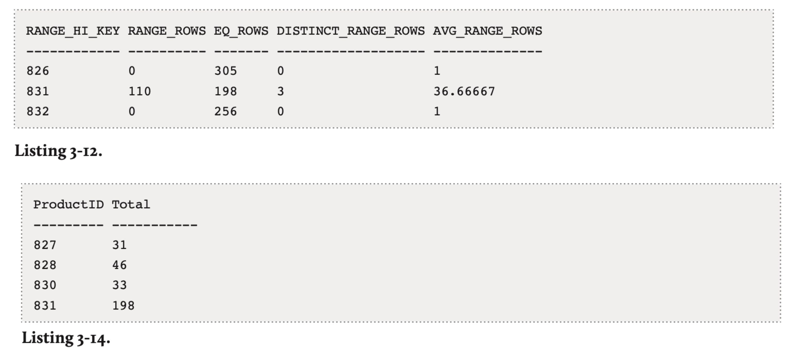

Inside the SQL Server Query Optimizer
https://www.red-gate.com/library/inside-the-sql-server-query-optimizer
结合SQL Server介绍Query Optimizer的工作原理，刚开始阅读的时候我还没有注意是SQL Server。整本书我就是粗看了一下，看到自己可以理解的地方就稍微深入看看，看看SQL Server是怎么做的，主要内容都集中 Chapter 3: Statistics and Cost Estimation.
自动收集的统计信息都是基于单列的，包括有：histogram（直方图），density information（可以认为就是ndv的倒数），string stats(字符串信息)。除此之外还可以创建filtered stats 就是在某个过滤条件下的统计信息。
However, the statistics which are automatically generated by the Query Optimizer are always single-column statistics. As I've already mentioned briefly, the most important components of statistics objects are the histogram, the density information, and the string statistics. Both histograms and string statistics are created only for the first column of a statistics object, the latter only if the column is of a string data type. Density information (which I'll discuss in plenty of detail later in this chapter) is calculated for each set of columns forming a prefix in the statistics object. Filtered statistics, on the other hand, are not created automatically by the Query Optimizer, but only when a filtered index is created, or by issuing a CREATE STATISTICS statement with a WHERE clause. Both filtered indexes and statistics are a new feature introduced in SQL Server 2008, which we will touch upon later.
看上去SQL Server每次执行Query都会去更新统计信息（准确说也不是每次，但是会判断统计信息是否失效），并且默认还是同步的。 判断统计信息是否失效，则是看某个column上的操作次数，超过某个阈值就会认为是失效的。
By default, SQL Server needs to wait for the update statistics operation to complete before optimizing and executing the query; that is, statistics are updated synchronously. A new database configuration option introduced with SQL Server 2005, AUTO_UPDATE_STATISTICS_ASYNC, can be used to change this default and let the statistics be updated asynchronously. As you might have guessed, with asynchronous statistics update, the Query Optimizer does not wait for the update statistics operation to complete, and instead just uses the current statistics for the optimization process. This can help in situations where applications experience timeouts caused by delays related to the automatic update of statistics. Although the current optimization will use the out-of-date statistics, they will be updated in the background and will be used by any later query optimizations.
QL Server defines when statistics are out of date by using column modification counters or colmodctrs, which count the number of table modifications, and which are kept for each table column. Basically, for tables bigger than 500 rows, a statistics object is considered out of date if the colmodctr value of the leading column has changed by more than 500 plus 20% of the number of rows in the table. The same formula is used by filtered statistics but, since they are built only from a subset of the records of the table, the colmodctr value is first adjusted depending on the selectivity of the filter. Colmodctrs are usually not exposed by any SQL Server metadata although they can be accessed by using a dedicated administrator connection and looking at the rcmodified column of the sys.sysrscols base system table in SQL Server 2008 (same information can be found on the sysrowset columns for SQL Server 2005).
统计信息的收集也是使用sample的方式而不是扫描全表，最小使用8MB sample size进行采样。
When it comes to determining the quality of your statistics, a fact to consider is the size of the sample used to calculate said statistics. The Query Optimizer always uses a sample of the target table when it creates or updates statistics, and the minimum sample size is 8 MB, or the size of the table if it's smaller than 8 MB. The sample size will increase for bigger tables, but it may still only be a small percentage of the table.
If needed, you can explicitly request a bigger sample or scan the entire table to have better quality statistics. Using the CREATE STATISTICS and UPDATE STATISTICS statements you can specify a sample size or use the WITH FULLSCAN option to scan the entire table. Doing either of these can be of benefit, especially with data that is not randomly distributed throughout the table. Scanning the entire table will naturally give you the most accurate statistics possible. In fact, given that statistics are always created alongside a new index, and given that this operation scans the entire table anyway, index statistics are initially created with the equivalent of the WITH FULLSCAN option. However, if the Query Optimizer needs to automatically update these index statistics, it can only use a default sample, as it may take too long to scan the entire table again.
Histogram实现最多使用200 steps, 并且使用maxdiff algorithm来选择频率最高的值作为分隔点，这样可以更好地捕捉到数据分布情况。
The maximum number of steps in a histogram is 200, but even if the input has 200 or more unique values, a histogram may still have less than 200 steps. To build the histogram, SQL Server finds the unique values in the column and tries to capture the most frequent ones using a variation of the maxdiff algorithm, so that the most statistically significant information is preserved. Maxdiff is one of the available histograms whose purpose is to accurately represent the distribution of data values in relational databases.
以下图为例来解释historgam：
- RANGE_HI_KEY 表示分隔点，比如831
- RANGE_ROWS 表示从上个分隔点到这个分隔点（不包含）的数量, 比如(827-830 = 110)
- EQ_ROWS 表示多个值等于分隔点(比如 # of v=831 是198)
- DISTINCT_RANGE_ROWS 表示区间的ndv
- AVG_RANGE_ROWS = RANGE_ROWS / DISTINCT_RANGE_ROWS

针对类似 a*b > 100 这样的computed columns表达式，SQL Server是没有办法估计的，所以默认使用30%筛选度（里面说是inequality, 也不知道其他情况如何）一种解决的办法就是创建computed column, 这个column本质上也是单个column所以SQL Server可以创建这个column的stats.
A problem faced by some queries using scalar expressions is that they usually cannot benefit from column statistics and, without statistics, the Query Optimizer will use the 30% selectivity guess on inequality comparisons, which may produce inefficient execution plans. A solution to this problem is the use of computed columns, as SQL Server can automatically create and update statistics on these columns. The great benefit of this solution is that you don't need to specify the name of the computed column in your queries for SQL Server to use its statistics. The Query Optimizer automatically matches the computed column definition to an existing scalar expression in a query, so your applications do not need to be changed.
ALTER TABLE Sales.SalesOrderDetail ADD cc AS OrderQty * UnitPrice
DTA(Database Engine Tuning Advisor)会创建hypothetical index, 这个index其实就是创建索引的index stats, 然后看如果有这个Index是否会产生更好的(cost更低)的plan.
So, to avoid creating real indexes during a DTA session, SQL Server uses a special kind of indexes called hypothetical indexes, which were also used by the Index Tuning Wizard. As the name implies, hypothetical indexes are not real indexes; they only contain statis- tics and can be created with the undocumented WITH STATISTICS_ONLY option of the CREATE INDEX statement. You may not be able to see these indexes during a DTA session because they are dropped automatically when they are no longer needed. However, you could see the CREATE INDEX WITH STATISTICS_ONLY and DROP INDEX statements if you run a SQL Server Profiler session to see what the DTA is doing.
FAST N特性是让Engine尽快返回N条记录（或者是返回N条记录之后就可以直接kill了）实现上就尽可能地避免使用blocking operator比如Sort, Hash Join, Hash Agg.
FAST N is one of the so-called goal oriented hints, as it does not indicate what physical operators to use, but instead just specifies what goal the plan is trying to achieve. This hint is used to optimize a query to retrieve the first N rows of results as quickly as possible. It can help in situations where only the first few rows returned by a query are relevant, and perhaps you won't be using the remaining records of the query at all. The price to pay for achieving this speed is that retrieving those remaining records may take longer than if you had used a plan without this hint. In other words, since the query is optimized to retrieve the first N records as soon as possible, retrieving all the records returned by the query may be very expensive.
The Query Optimizer usually accomplishes this FAST N goal by avoiding any blocking operators, like Sort, Hash Join or Hash Aggregation, so the client submitting the query does not have to wait before the first records are produced.